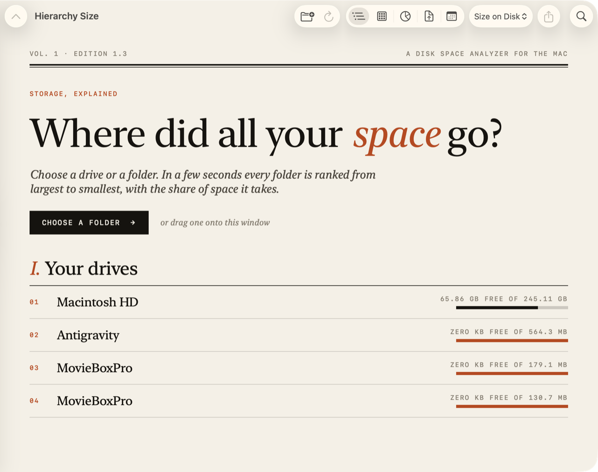

(I) The premise
Every Mac fills up. Few will tell you why. Hierarchy Size reads every folder, weighs every file, and lays the answer out like a well-kept archive, so you can see what to keep, and what to let go.
The Collection(6)
Six instruments for understanding a full disk, each one a free part of Hierarchy Size. Scroll to walk the gallery.

The Tree
Every folder ranked from largest to smallest, with the share of its parent it consumes.
Hidden Space
Snapshots, swap memory, Preboot, Recovery and disk images: what “System Data” is made of.

The Treemap
The whole disk as nested rectangles, each drawn in proportion to its size. Double-click to zoom.
The Ledger
The 250 largest files under any folder, ready to reveal in Finder or remove.
The Hourglass
How much of your drive hasn't been touched in a month, a year, five years.

File Types
Video, images, apps, archives and documents, down to every extension.
Where did all
your space go?
Pick a drive. In a few seconds you'll know, and you can delete what you don't need, safely, without leaving the app.
Download for Mac free
The field
| Hierarchy Size | DaisyDisk | GrandPerspective | OmniDiskSweeper | TreeSize / WinDirStat | |
|---|---|---|---|---|---|
| Runs on macOS | Yes | Yes | Yes | Yes | No, Windows only |
| Free | Yes | No, paid | Yes | Yes | Varies |
| Open source | Yes, MIT | No | Yes | No | Varies |
| Sorted folder tree | Yes | Yes | No | Yes | Yes |
| Treemap | Yes | Sunburst | Yes | No | Yes |
| File type & age reports | Yes | No | No | No | Varies |
| Snapshots, swap, disk images | Yes | Partly | No | No | No |
Compiled from each product's public information. Features change; check each vendor for the latest.
Questions & answers
How do I see what is taking up space on my Mac?
Open Hierarchy Size and click Macintosh HD or any folder. Within seconds every folder is listed largest first. Expand the biggest, or switch to the Treemap to spot large files.
Is there a TreeSize for Mac?
TreeSize and WinDirStat are Windows apps. Hierarchy Size is a free, open-source TreeSize alternative for macOS, with a size-sorted folder tree, file type reports, a largest files list and CSV export.
What is “System Data,” and how do I reduce it?
Usually caches, logs, APFS snapshots, swap memory, iOS simulator runtimes and app support files. Hidden Space shows snapshots, swap and disk images; scan ~/Library/Caches and ~/Library/Application Support for the rest.
Why didn't my free space grow after deleting?
Deleted files sit in the Trash until it's emptied, and snapshots can hold deleted data. Empty the Trash from the sidebar, use Delete Immediately, and check Hidden Space.
How do I find large files on my Mac?
Scan a folder and open Largest Files. It lists the 250 biggest files with their location. Right-click to reveal in Finder or delete.
Is it safe to delete ~/Library/Caches?
Usually, yes: apps rebuild their caches automatically. Quit the apps first, then delete their cache folders.
Is Hierarchy Size free, safe and private?
Yes. It's MIT-licensed, runs only on your Mac, has no network code and collects nothing. The source is public on GitHub.
Does it run on Apple Silicon and Intel?
Yes. It's a universal app for macOS 14 Sonoma and later, on M1, M2, M3, M4 and Intel Macs.
وين راحت مساحة جهازك؟
Hierarchy Size برنامج مجاني ومفتوح المصدر للماك، بديل TreeSize. يعرض لك أكبر المجلدات والملفات مرتبة من الأكبر للأصغر، مع نسبة كل مجلد من المجلد اللي فوقه، وخريطة ملونة توضّح الملفات الكبيرة في لحظة.
ويكشف المساحة المخفية اللي يجمعها الماك تحت اسم «بيانات النظام»: اللقطات، وذاكرة التبديل، وأجزاء النظام، وملفات الأقراص. وتقدر تحذف اللي ما تحتاجه بأمان، من داخل البرنامج. يشتغل على جهازك فقط، بدون إنترنت وبدون تتبّع.
حمّل البرنامج مجاناً